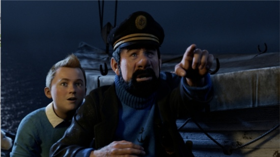

Parce qu'il achète la maquette d'un bateau appelé la Licorne, Tintin, un jeune reporter, se retrouve entraîné
dans une fantastique aventure à la recherche d'un fabuleux secret.
En enquêtant sur une énigme vieille de plusieurs siècles, il contrarie les plans d'Ivan Ivanovitch Sakharine,
un homme diabolique convaincu que Tintin a volé un trésor en rapport avec un pirate nommé Rackham le Rouge.
Avec l'aide de Milou , son fidèle petit chien blanc, du capitaine Haddock , un vieux loup de mer au mauvais
caractère, et de deux policiers maladroits,Dupond et Dupont , Tintin va parcourir la moitié de la planète,
et essayer de se montrer plus malin et plus rapide que ses ennemis, tous lancés dans cette course au trésor
à la recherche d'une épave engloutie qui semble receler la clé d'une immense fortune et une redoutable malédiction.
De la haute mer aux sables des déserts d'Afrique, Tintin et ses amis vont affronter mille obstacles, risquer
leur vie, et prouver que quand on est prêt à prendre tous les risques, rien ne peut vous arrêter

Un lien pour visualiser la vidéo de présentation du film : Allociné.com